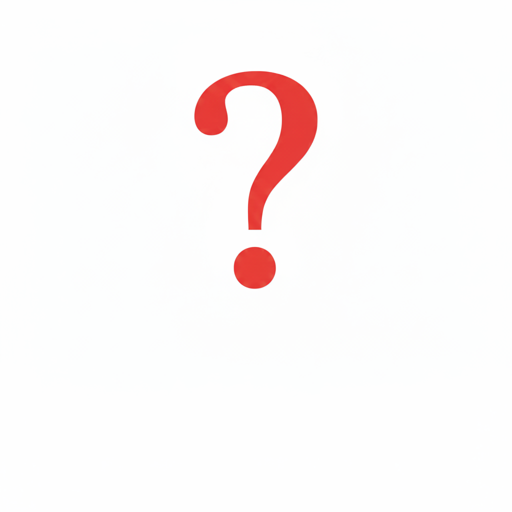

L'univers de Demon Slayer (Kimetsu no Yaiba) a été créé par la ou le mangaka **Koyoharu Gotōge**.
L'auteur(e) est connu(e) pour être très discret(e), préférant rester anonyme et se représenter par un avatar de **crocodile à lunettes**. L'œuvre originale a été publiée dans le **Weekly Shōnen Jump** (Shūeisha) de 2016 à 2020.
Le génie de Gotōge réside dans son mélange unique d'action spectaculaire, d'émotions brutes et d'un style graphique distinctif inspiré de l'ère Taishō, posant les fondations du succès mondial que l'anime a ensuite amplifié.